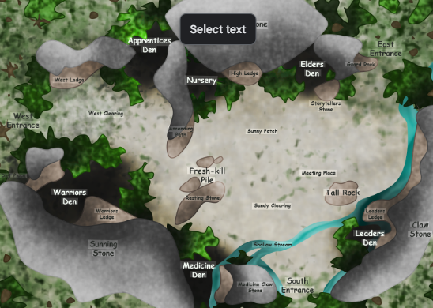
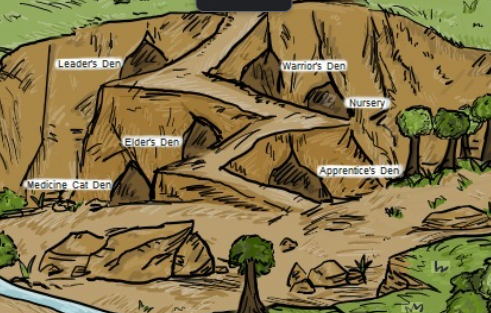
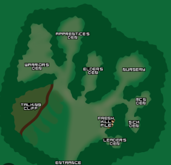
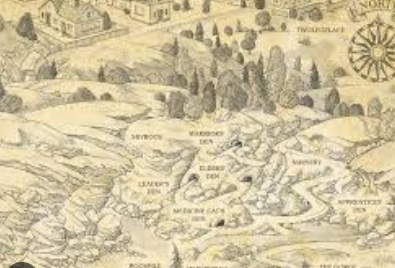
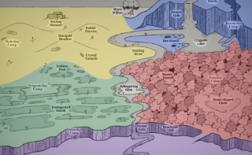

ForestThunderClan
Known for courage, loyalty, and strong warrior hearts.

RiverRiverClan
Graceful swimmers and skilled fishers.

MoorWindClan
Fast, lean cats who live on open moorland.
 Marsh
Marsh
ShadowClan
Clever, tough, and secretive.

SkySkyClan
Powerful jumpers and climbers.

AncestorsStarClan
The spiritual ancestors of the warrior cats.